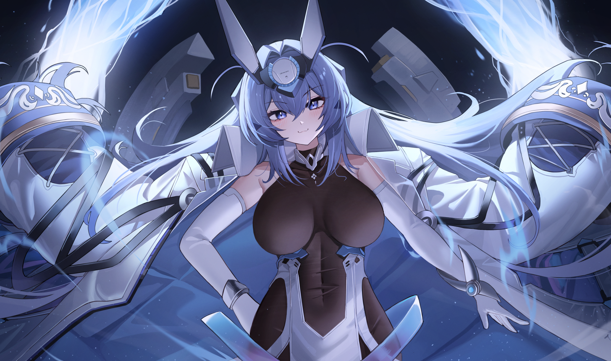

Jugabilidad
Características
Más información

"Azur Lane" es un juego y franquicia multimedia de
origen japonés que se centra en la temática de batallas navales y naves de
guerra antropomorfas. Azur Lane es una franquicia de medios
que combina elementos de batallas navales estratégicas, coleccionismo de
personajes y una narrativa que gira en torno a las shipgirls y su lucha
contra las Sirens. Ha ganado popularidad tanto en Japón como en otros
lugares y ha atraído a una base de fanáticos dedicada.